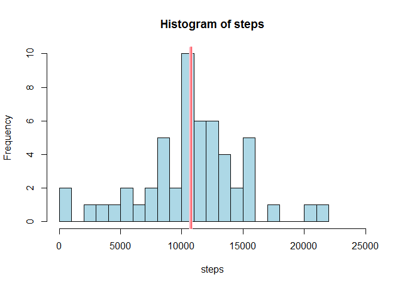
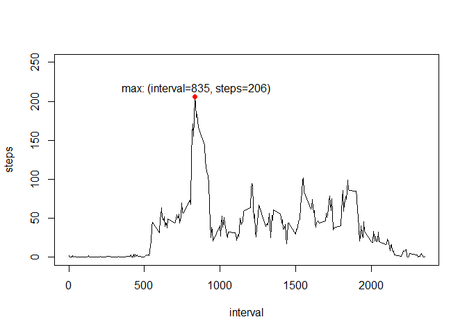
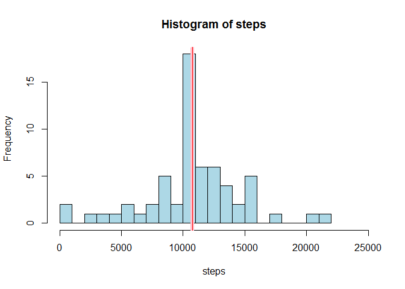
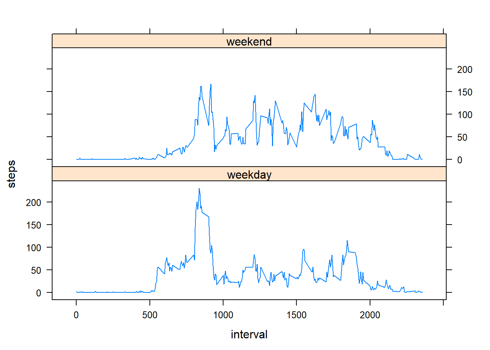

This assignments involves using data from activity monitoring devices to answer questions about the activity levels of individuals tracked over 5-minute intervals over a two-month period in October and November 2012.
activity <- read.table(file="activity.csv", sep=",", na.strings="NA", header=TRUE)stepsbyday <- aggregate(steps ~ date, data=activity, sum)
meansteps <- mean(stepsbyday$steps)
mediansteps <- median(stepsbyday$steps)
with(stepsbyday, hist(steps, breaks=20, xlim=c(0,25000),
col="lightblue"))
abline(v=meansteps, col="pink", lwd=6)
abline(v=mediansteps, col="red", lwd=1)
The mean number of steps taken per day is meansteps. The median number of steps taken per day is median steps.
library(dplyr)##
## Attaching package: 'dplyr'## The following objects are masked from 'package:stats':
##
## filter, lag## The following objects are masked from 'package:base':
##
## intersect, setdiff, setequal, unionstepsbyint <- aggregate(steps ~ interval, data=activity, mean)
stepsort <- arrange(stepsbyint,desc(steps))
maxsteps <- stepsort[1,2]
maxint <- stepsort[1,1]
with(stepsbyint, plot(x=interval,y=steps,type="l",ylim=c(0,250)))
points(x=maxint, y=maxsteps, col="red", pch=19)
text(x=maxint+10, y=maxsteps+10, paste("max: (interval=",round(maxint,0),
", steps=",round(maxsteps,0),")",sep=""))
NAcnt1 <- sum(is.na(activity$steps))
NAcnt2 <- sum(is.na(activity$date))
NAcnt3 <- sum(is.na(activity$interval))The total number of missing “steps” values in the activity dataset is NAcnt1. Note: there are no missing values in the “date” or “interval” columns.
We can impute missing values by replacing them with the average number of steps for the respective interval as computed above.
active_mrg <- merge(activity,stepsbyint,by="interval",all.x=TRUE)
missing <- active_mrg[is.na(active_mrg$steps.x),]
missing$steps <- missing$steps.y
nonmissing <- active_mrg[!is.na(active_mrg$steps.x),]
nonmissing$steps <- nonmissing$steps.x
active_impute <- rbind(missing,nonmissing)stepsbyday_new <- aggregate(steps ~ date, data=active_impute, sum)
meansteps_new <- mean(stepsbyday_new$steps)
mediansteps_new <- median(stepsbyday_new$steps)
with(stepsbyday_new, hist(steps, breaks=20, xlim=c(0,25000),
col="lightblue"))
abline(v=meansteps_new, col="pink", lwd=6)
abline(v=mediansteps_new, col="red", lwd=1)
The mean number of steps taken per day is meansteps_new. The median number of steps taken per day is median steps_new.
Imputing the missing values left the mean unchanged and caused the median to increase slightly to equal the mean.
active_impute$weekday <- weekdays(as.Date(active_impute$date))
active_impute$weekend <- "weekday"
active_impute$weekend[active_impute$weekday=="Saturday" |
active_impute$weekday=="Sunday"] <- "weekend"
stepsbyint_new <- aggregate(steps ~ interval * weekend, data=active_impute, mean)
library(lattice)
xyplot(steps ~ interval | weekend, data=stepsbyint_new, layout=c(1,2), type="l")